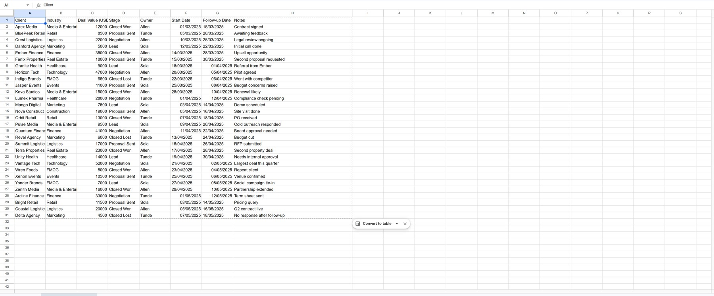
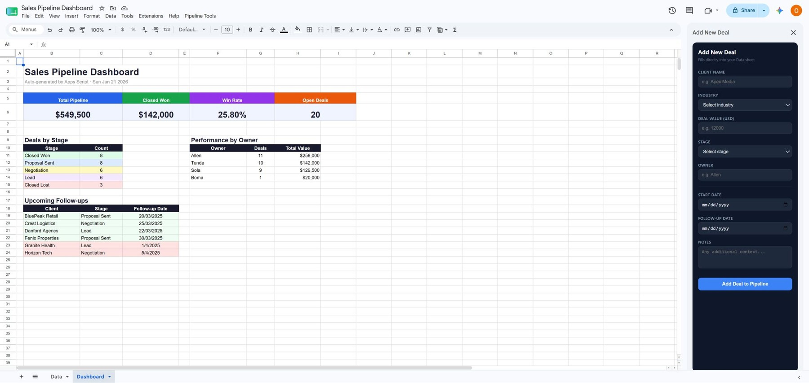
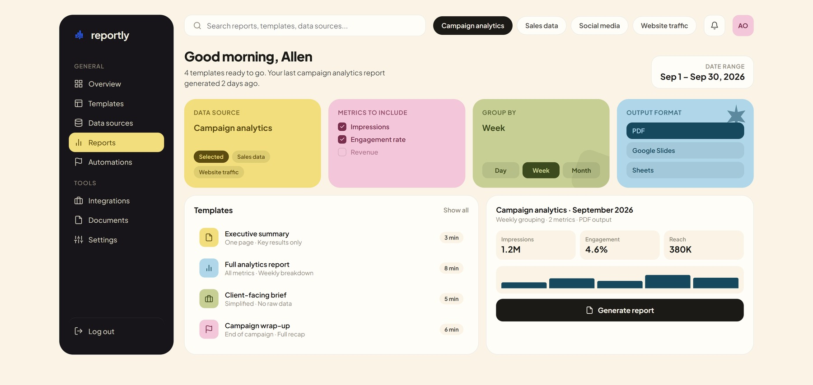

Internal Tools
I spot what's slowing a team down and build the tool to fix it. Dashboards, an LMS, a CRM, a link tracker, each one solving a real gap.
Ferry, my own link and QR tool
Built because I wanted one clean place to shorten links, generate QR codes, and see what's actually getting clicked, without paying for someone else's tool. It's live right now.
 Dashboard
DashboardA CRM built on top of a plain spreadsheet
Same data, before and after. One side is a list. The other is a dashboard someone can actually run a pipeline from, with a form built right into the sidebar.


Reportly, a report generator concept
An idea for a tool that sits on top of a reporting workflow: pick a data source, pick your metrics, pick a format, generate. Built as a design concept, not a shipped product, yet.

What I actually build
I don't start with the tool, I start with what's actually broken. The build follows from that.
Internal dashboards built on Sheets, Apps Script, or a lightweight web app, whatever the job actually needs.
The repetitive manual step, removed. Forms that fill sheets, sheets that trigger alerts, that kind of thing.
Tools break quietly if nobody's watching. I check mine before they become someone else's problem.
A tool nobody else can run without me isn't finished. I leave a simple guide behind.
Fresh Build
Tell me the process that's slowing you down, I design and build the tool that replaces it.
Fix What's Broken
Already have a spreadsheet or script that's outgrown itself? I clean it up and rebuild what needs rebuilding.
Ongoing Support
Tools need upkeep. I check in on a schedule so nothing quietly breaks.